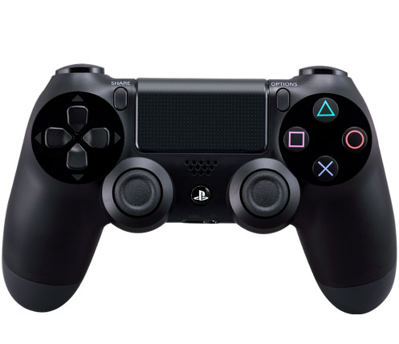

AKASCORP

Perkembangan Game Online di Indonesia
Nov 01, 2017views : 3,487,497Menurut Ligagame Indonesia(ligagames.com), game online muncul di Indonesia pada tahun 2001,
Watch ThisSejarah Game Online
Nov 01, 2017views : 3,487,497Sejarah game online inilah perjalanan sejarah game online permainan daring dimulai sejak tahun 1969,
Watch This
Dampak Negatif Game Online Ditinjau dari Beberapa Segi
Nov 01, 2017views : 3,487,497Ketika seseorang memainkan game online sebenarnya permainan tersebut memberikan banyak sekali manfaat bagi penggunanya.
Watch This